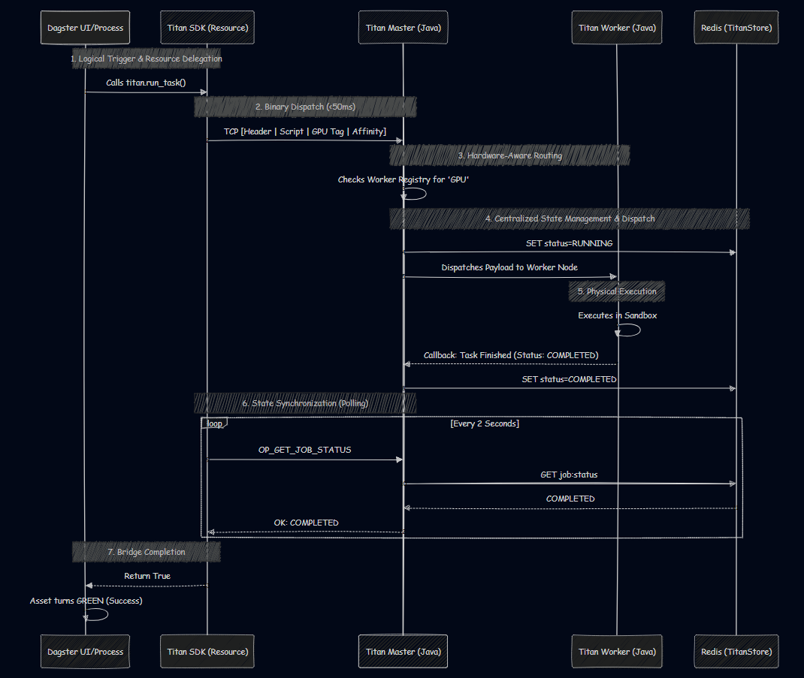

🐙 Hybrid Orchestration (Dagster + Titan)
Best for: Enterprise environments that want Dagster's UI and data lineage, but Titan's hardware-aware compute.
In this mode, you separate the Control Plane from the Data Plane. Dagster acts as the logical DAG layer (managing the UI, lineage, and metadata), while Titan assumes responsibility for the physical execution—turning a control-plane-only scheduler into a hardware-aware distributed runtime.
Why use this pattern?
By integrating Titan as a Dagster Resource, you gain:
- Hardware-Aware Routing: Dagster itself cannot easily route a specific Python function to a remote machine with a GPU. Titan handles this transparently.
- Infrastructure Elasticity: Titan auto-scales the underlying hardware nodes based on the load Dagster throws at it.
- Unified Logging: Titan's SDK streams the remote execution logs from isolated physical workers directly back into the local Dagster UI.
The Integration Code
You can bridge the two systems by extending dg.ConfigurableResource. This creates a custom TitanEngine that submits the job and runs a synchronous polling loop to stream the status and logs back to Dagster.
File: pipeline.py
import time
import dagster as dg
from titan_sdk import TitanClient, TitanJob
class TitanEngine(dg.ConfigurableResource):
"""
The official bridge to the Titan Distributed Engine.
Handles TCP dispatch and synchronous polling.
"""
def run_task(self, context: dg.AssetExecutionContext, script_path: str, requirement: str = "GENERAL", affinity: bool = False):
client = TitanClient()
# Extract the logical asset name (e.g., "raw_data")
step_name = context.asset_key.path[-1]
t_job = TitanJob(
job_id=step_name,
filename=script_path,
job_type="RUN_PAYLOAD",
requirement=requirement,
affinity=affinity,
is_archive=False
)
context.log.info(f"🚀 Routing '{step_name}' to Titan (Req: {requirement}, Affinity: {affinity})")
client.submit_job(t_job)
# Synchronous Polling Loop via Titan's Status API
master_job_id = f"DAG-{step_name}"
while True:
status = client.get_job_status(master_job_id)
if status == "COMPLETED":
# Fetch logs on success for full visibility
worker_logs = client.fetch_logs(master_job_id)
context.log.info(f"✅ Titan Worker Logs:\n{worker_logs}")
context.log.info(f"✅ Titan finished physical execution of '{step_name}'!")
return True
elif status == "FAILED":
# Fetch logs on failure to debug within Dagster
worker_logs = client.fetch_logs(master_job_id)
context.log.error(f"❌ Titan Worker failed. Remote Logs:\n{worker_logs}")
raise Exception(f"❌ Titan Worker failed on '{step_name}'.")
time.sleep(2)
# --- The Logical Assets ---
@dg.asset
def raw_data(context: dg.AssetExecutionContext, titan: TitanEngine):
"""Step 1: General extraction task."""
titan.run_task(context, script_path="extract.py", requirement="GENERAL", affinity=False)
@dg.asset
def trained_model(context: dg.AssetExecutionContext, titan: TitanEngine, raw_data):
"""Step 2: Heavy GPU task. Forced to same node as Step 1."""
titan.run_task(context, script_path="train.py", requirement="GPU", affinity=True)
@dg.asset
def evaluation_metrics(context: dg.AssetExecutionContext, titan: TitanEngine, trained_model):
"""Step 3: Lightweight CPU task. No affinity needed."""
titan.run_task(context, script_path="eval.py", requirement="GENERAL", affinity=False)
# --- Workspace Configuration ---
defs = dg.Definitions(
assets=[raw_data, trained_model, evaluation_metrics],
# We bind the Titan engine to the workspace here
resources={"titan": TitanEngine()}
)
Dagster Execution Dashboard

What happens under the hood:
-
Dagster evaluates the logical asset dependency graph.
-
When an asset unblocks, Dagster triggers the titan.run_task() function.
-
Titan translates that asset into a TitanJob, finds an available node matching the requirement (like GPU), and dispatches the code.
-
The Dagster process waits in a while True loop, querying Titan for the status.
-
Once the remote node finishes, Titan pulls the stdout/stderr logs across the network and prints them natively into the Dagster UI!
Sequence Diagram
Dagster holds the logical execution graph and delegates physical execution to Titan via a synchronous polling loop.
